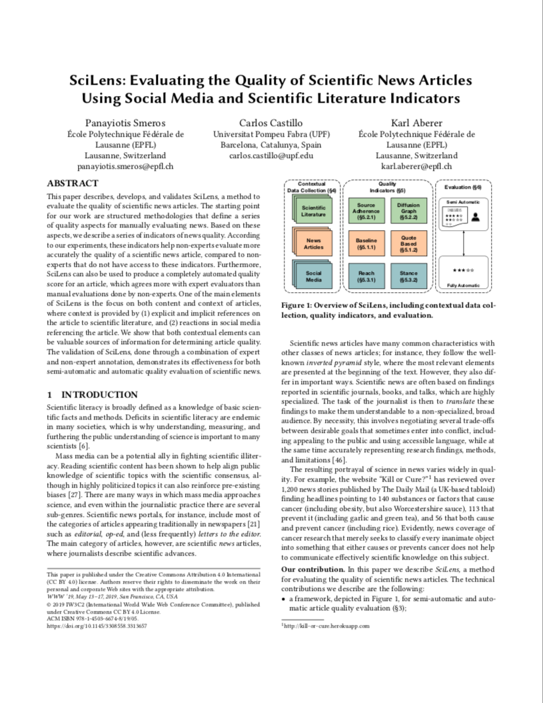
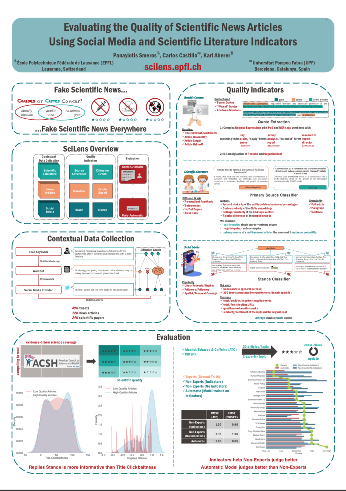

In a nutshell
SciLens is a framework that evaluates the quality of scientific news articles using several content and context indicators.
According to our experiments, these indicators help non-experts evaluate more accurately the quality of a scientific news article, compared to non-experts that do not have access to these indicators.
Furthermore, SciLens can also be used to produce a completely automated quality score for an article, which agrees more with expert evaluators than manual evaluations done by non-experts.
Content and Context Indicators
Regarding the content of an article, we consider the click-baitness of its title, the sentiment, the readability and the length of its body and whether it is bylined by its author.
We also analyze its quotes, distinguishing between attributed and unattributed or “weasel” quotes.
Regarding the scientific context, we measure the semantic textual similarity between the article and the related scientific literature.
We also expect high-quality articles to be connected through many short paths to scientific portals and academic websites in the Web graph.
Finally, regarding the social media context, we measure two aspects: reach i.e., the impact that the article has in social media and stance i.e., the positioning of posting authors with respect to the article.
For more details, have a look on our WWW'19 paper [pdf, bib, poster]
 